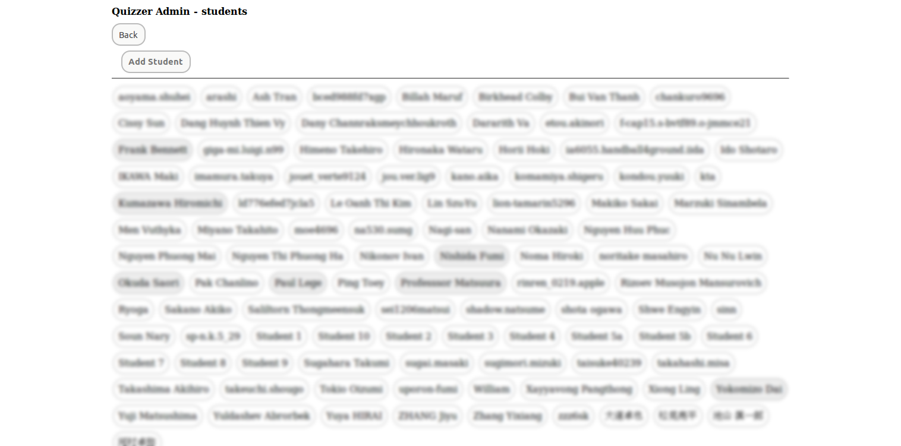
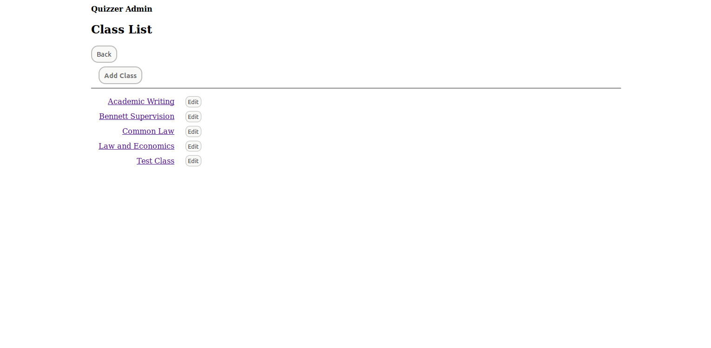
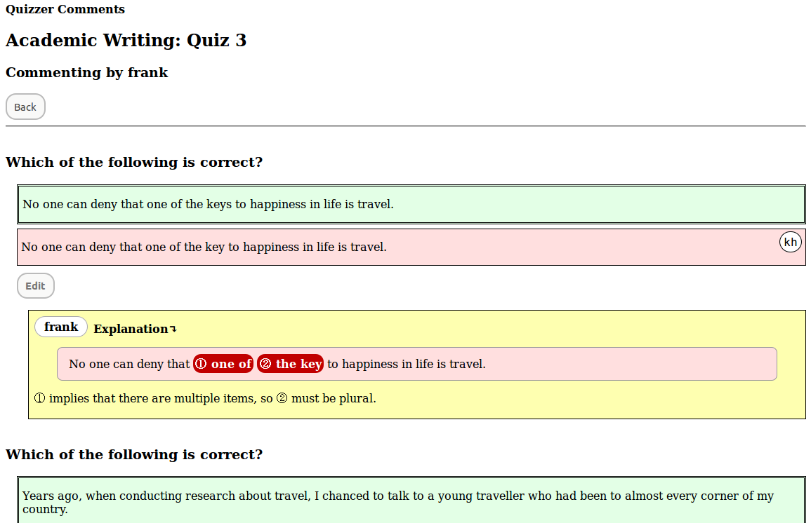

Contents
Overview
Quizzer is a tool for writing instruction. It is particularly suitable for:
- Second language learners
- Students facing novel stylistic demands (such as in law school)
- Any teaching environment where staff resources are in short supply
In contrast to many commercial offerings in the online education "sphere", Quizzer is not designed to replace the instructor: it was build by an instructor, to enable more efficient and positive interaction with students over issues of grammar and style.
Quizzer is simple to install and use. A couple of highlights to encourage the reader:
- Students do not need to be issued IDs and passwords. It just works.
- The entire system can be installed with a single command.
Quizzer makes intensive use of multiple-choice quizzes, not as a test of knowledge or of skill "level", but as a lightweight means of encouraging students to engage positively with flaws in their writing. In our Academic Writing program in the Nagoya University Faculty of Law, Quizzer supports the following workflow:
- Students submit a 400-word essay once each week on an arbitrary topic.
- The instructor selects one poorly-written sentence from each essay, and composes a multiple-choice question consisting of the student's own sentence, two alternatives that also contain errors, and a corrected version. The essays themselves are not assessed.
- After constructing one question from each submitted essay, students are sent personalized links to the resulting quiz.
- Students submit their responses, which are recorded on the Quizzer server. Student receive feedback immediately feedback on their incorrect responses.
- Class commenters (TAs, instructors, and other experienced writers) post short explanations of why the wrong answers were wrong.
- When students revisit their quiz links, they will find both the comments, and a list of classmates who gave the correct answer to the questions that they missed.
- Students are given an assessed, paper-based, multiple-choice supplementary mid-term and final exam, consisting entirely of questions from the quizzes.
Quiz distribution, commenting, exam composition, and marking are all managed by Quizzer. Paper tests are randomized as a hedge against cheating, and marked with a barcode reader for quick assessment.
As an additional feature suited to our own environment, the native languages of students choosing each wrong answer are shown in the commenter view. This allows satellite commenters (alumni with strong English writing skills, in our case) to provide guidance in the native language of the students concerned.
The initial inspiration for Quizzer was a small code
sample
posted by Chetan Jain. The code has been refactored and extended
considerably for this project, but I gratefully acknowledge the
starting point for this frolic. Hats off also to the developers of
node.js, and LaTeX and, well, everything else. Quizzer was built
on short notice to fill a critical need, and it has been a real
pleasure to see how quickly the whole thing could be brought together.
Basic Installation
Install quizzer from the npm repository:
npm install quizzer
In addition to the dependencies pulled in by npm, Quizzer needs to
have access to the external programs pandoc and pdflatex. Both
should be available as package installs on your operating system (the
latter as part of the texlive package).
Run the server by saving the following code to a file (such as quizServer.js,
say):
var qz = require('quizzer');
qz.run();
Run the script from command line like this:
node ./quizServer.js
The script will whinge on first run, asking for some essential details:
usage: quizServer.js [-h] [-v] [-H PROXY_HOSTNAME] [-p REAL_PORT]
[-e EMAIL_ACCOUNT] [-s SMTP_HOST]
Quizzer, a quiz server
Optional arguments:
-h, --help Show this help message and exit.
-v, --version Show program's version number and exit.
-H PROXY_HOSTNAME, --proxy-hostname PROXY_HOSTNAME
Host name for external access
-p REAL_PORT, --real-port REAL_PORT
Port on which to listen for local connections
-e EMAIL_ACCOUNT, --email-account EMAIL_ACCOUNT
Full username of email account (e.g. useme@gmail.com)
-s SMTP_HOST, --smtp-host SMTP_HOST
SMTP host name (e.g. smtp.gmail.com)
ERROR: must set option smtp_host
ERROR: must set option proxy_hostname
ERROR: must set option email_account
A GMail account can be used as EMAIL_ACCOUNT, with smtp.gmail.com as SMTP_HOST.
REAL_PORT will default to 3498, but can be set to other values for multiple
server instances. For initial testing, PROXY_HOSTNAME should be set to 127.0.0.1
or localhost. Running again will yield this:
ERROR: file mypwd.txt not found: Error: ENOENT, no such file or directory './mypwd.txt'
Save the email account password to disk in a file mypwd.txt (only the user running
Quizzer should have access permissions on the file, obviously). This will get the server
running:
Wrote config parameters to quizzer-3498.cfg
Quizzer can now be run with the single option: -p 3498
Admin URL: http://localhost:3498/?admin=fyvg19vx
Adding admin role
Loaded class membership keys
Done. Ready to shake, rattle and roll!
Connect to the listed URL with a browser, and you're ready to go. The
database and configuration files are created in the directory from
which the script is run, named after the port number. The server can
be shut down with CTRL-c (SIGINT), and as the startup message
says, it can be restarted with the single option -p <REAL_PORT>
(Note that the admin key is automatically generated, and will differ
from that shown in the example above.)
Running Quizzer behind a Proxy
When PROXY_HOSTNAME is set to a fully qualified domain name
(e.g. myschool.edu), it will assume that it is being run behind a
reverse proxy, and adjust URLs accordingly. Quizzer itself has only
the thinnest concept of security, and should be run behind a proxy in
production (and preferably over SSL). Access to the administrator
display depends on a key set in the URL of a GET request. Rewrite
rules on the front-end web server should be used to assure that
attempts to set the key directly are rerouted through a
password-protected URL.
If lighttpd is used as the front-end server, and Quizzer is run from
a directory quizzer to which the server has access, configuration
settings like the following should do the trick:
url.rewrite = (
"^(?!/quizzer)(.*)\?admin=[^&]+(?:&(.*))*" => "/quizzer/admin.html$1?$2",
"^(?!/quizzer)(.*)&admin=[^&]+(?:&(.*))*" => "/quizzer/admin.html$1&$2",
"^/quizzer/admin.html$" => "/quizzer/admin.html?admin=fyvg19vx",
"^/quizzer/admin.html\?(.*)$" => "/quizzer/admin.html?admin=fyvg19vx&$1"
)
$HTTP["host"] == "faculty.of.things.edu" {
proxy.server = ( "/quizzer" => ( ( "host" => "127.0.0.1", "port" => 3498 ) ) )
}
auth.backend = "htdigest"
auth.backend.htdigest.userfile = "/etc/lighttpd/lighttpd.user"
auth.require = ( "/quizzer/admin.html" =>
(
"method" => "basic",
"realm" => "Quiz Admin",
"require" => "user=quizmaster"
)
)
Commenters and Commenting
Quizzer data is held in an sqlite3 database, located in the directory
from which the script is run, and named after the port number under
which the instance is running.
commenters are held in the admin table of the Quizzer database.
There is no web interface to this table: add commenters by inserting
them directly, using the sqlite3 access tool, like so:
sqlite3> INSERT INTO admin VALUES (NULL, 'jeff', 'ahTh3nie', 2, 0);
The NULL value in the first column is for the automatically-assigned
numeric ID of the database row. The second column is the screen
name of the commenter, which must be unique. The third column is the
access key that will be included in the personal URL of the commenter,
and must also be unique. Under Linux, the pwgen utility is a handy
tool for creating these. The fourth column is the role of the commenter,
and must be set to 2. The fifth column is currently unused, but may
eventually control the intervals at which scheduled key resets and
reminder mailings occur.
After commenters have been added to the admin table, their
access URLs will be reported in the startup chatter. For example:
Reading config from quizzer-3498.cfg
Admin URL: http://localhost:3498/?admin=fyvg19vx
Adding admin role
Adding commenter 'adam' with URL http://localhost:3498/?commenter=En5chaej
Adding commenter 'bob' with URL http://localhost:3498/?commenter=koosha1D
Adding commenter 'chris' with URL http://localhost:3498/?commenter=Ro5aise5
Loaded class membership keys
Done. Ready to shake, rattle and roll!
The commenter links show a list of courses, and course links a list of quizzes with the number of uncommented mistakes, if any. Clicking on a quiz link opens a list of wrong answers, sorted in descending order of frequency among quiz-takers, and with already-commented answers pushed to the bottom.
Markdown syntax is recognized in comment text, with a few small
extensions. To set markers in text, enclose a number or letter in
double parens:
This will render as a circle-A: ((A))
For an explanation of why a wrong answer was wrong,
set a single > character at the beginning of the line,
followed by the pasted text of the wrong answer to be explained:
> Many new legislations were passed in 2010.
Mark text targeted for specific comment by wrapping it in double-quotes, opening with a single letter or number:
> ((1 Many)) new ((2 legislations)) ((3 were)) passed in 2010.
((2)) is a non-countable noun, and is *never* written
with an 's'. With a non-countable noun, use 'much', not
'many' at ((1)), and the singular verb form at ((3)).
For a comment that states a pattern, open with two '>' characters:
>> I studied *for* two hours.
For a comment that states a grammatical rule, open with three '>' characters:
>>> Never use the word "nowadays" in formal writing.
When set at the very beginning of an entry, the explanation, pattern, and rule prefixes trigger a tidy heading in the displayed entry.
Screenshots
The page layouts are pretty basic, but the buttons all work.
Top page

Global student list

Classes list

Class view

Quiz editing
Submission stragglers
Commenter view
